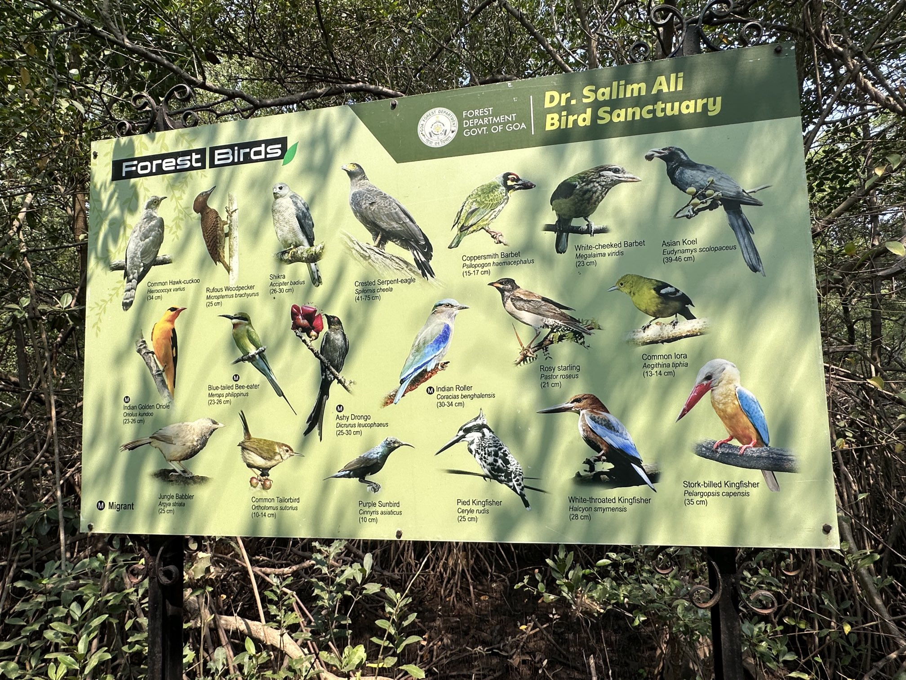
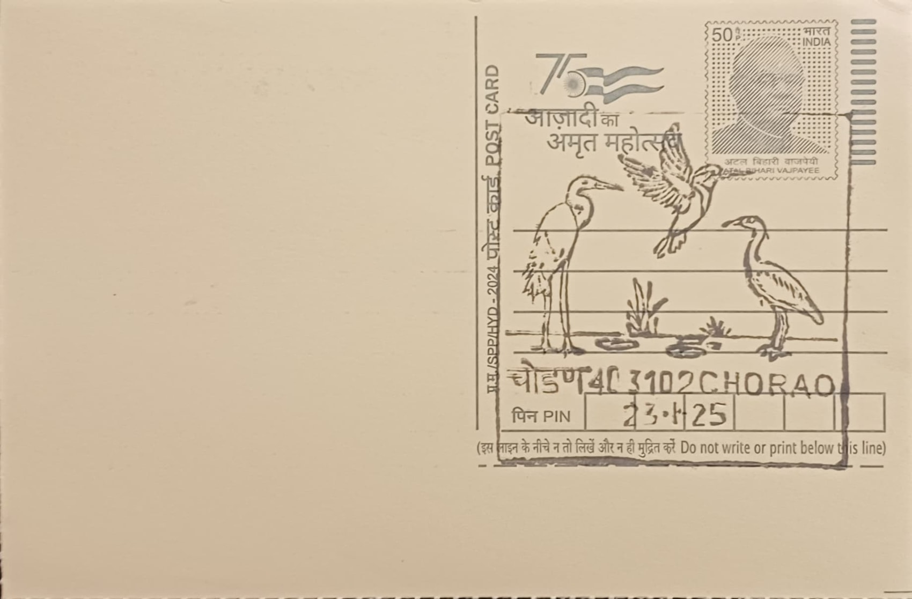
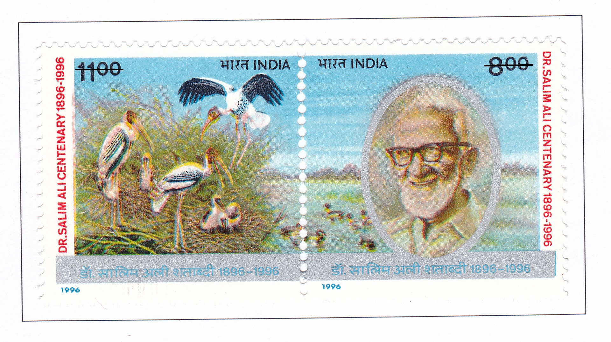
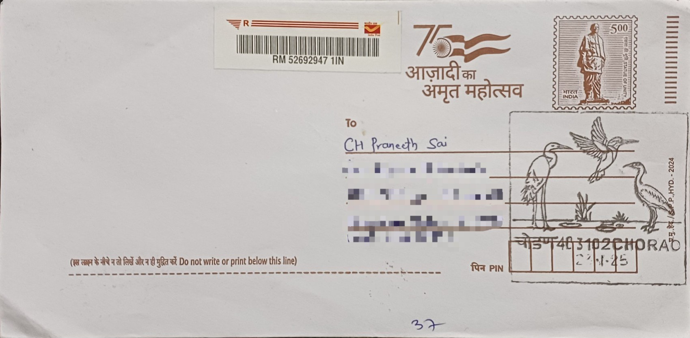
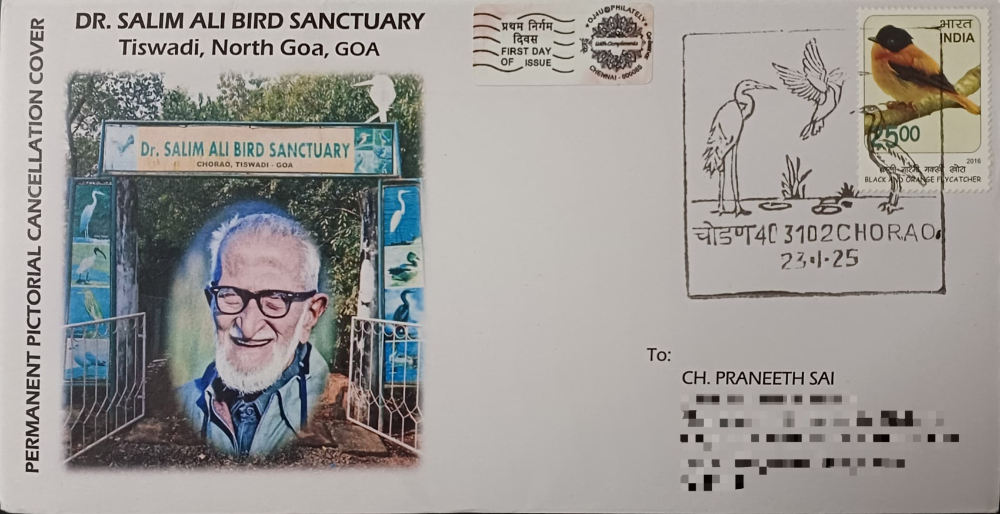
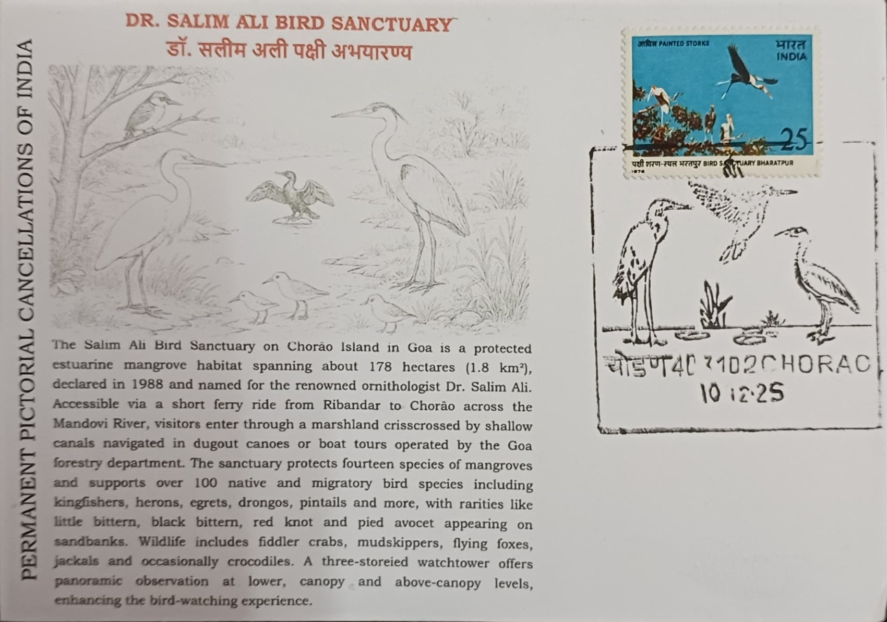
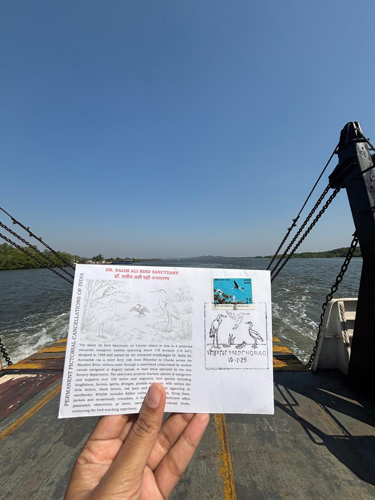

Dr. Salim Ali Bird Sanctuary, located on Chorao Island in Goa, is one of India’s most significant bird sanctuaries. Named after the renowned ornithologist Dr. Salim Ali, the sanctuary was established in 1988 to protect the diverse avian species and the unique mangrove ecosystem of the region. Spanning approximately 1.8 square kilometers, it is situated along the Mandovi River and provides a critical habitat for resident and migratory birds, making it a paradise for birdwatchers and nature enthusiasts.
The sanctuary is home to a rich variety of bird species, including egrets, herons, kingfishers, sandpipers, and cormorants. During the winter months, migratory birds such as pintails and coots arrive, adding to the sanctuary's biodiversity. Apart from birds, the region also shelters various wildlife species like flying foxes, jackals, crocodiles, and mudskippers. The mangrove ecosystem plays a crucial role in supporting these species by maintaining water quality and preventing coastal erosion.
Conservation efforts at Dr. Salim Ali Bird Sanctuary focus on preserving the fragile mangrove ecosystem and protecting wildlife from habitat destruction. The Goa Forest Department actively monitors the sanctuary, restricting human encroachments and promoting eco-tourism. Awareness programs and guided boat tours educate visitors about the importance of mangroves in sustaining biodiversity. Additionally, conservation initiatives include afforestation drives and research projects to monitor bird populations and environmental changes.
To explore the sanctuary, visitors must take a ferry from Ribandar to Chorao Island, followed by a short walk or a guided boat ride through the mangroves. The best time to visit is during the early morning or late evening when bird activity is at its peak. The sanctuary’s watchtower provides an excellent vantage point for observing birds and enjoying the tranquility of the surrounding natural environment.
Dr. Salim Ali Bird Sanctuary remains a vital ecological zone in Goa, contributing significantly to wildlife conservation and environmental education. Its protected status helps maintain the delicate balance of the mangrove ecosystem while offering a refuge for numerous bird and animal species. Ongoing conservation efforts ensure that future generations can continue to appreciate and study the diverse flora and fauna of this remarkable wetland habitat.

Dr. Salim Ali Centenary, 12.11.1996

Travelled Inaugural Day cover

Private Inaugural Day cover

Private Cover

Credits: Mrs. Bhavani B R
| Date of Introduction | January 23, 2025 |
|---|---|
| Address | Sub Postmaster, |
| Chorao SO, | |
| North Goa (dt.), Goa - 403102. |